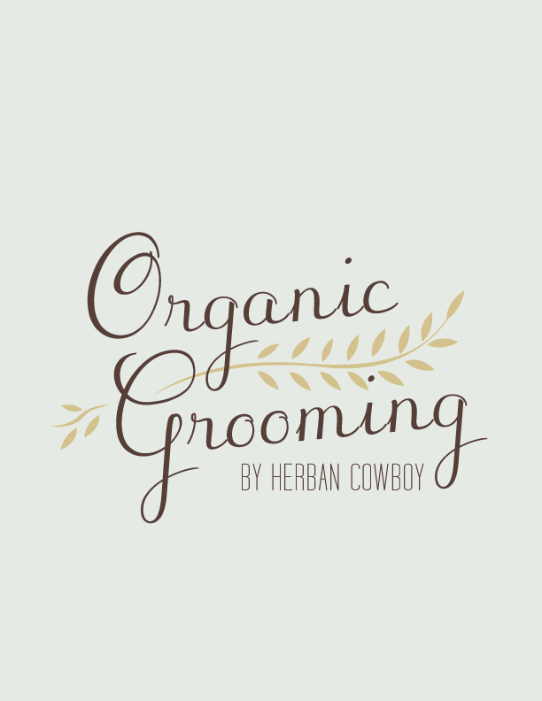
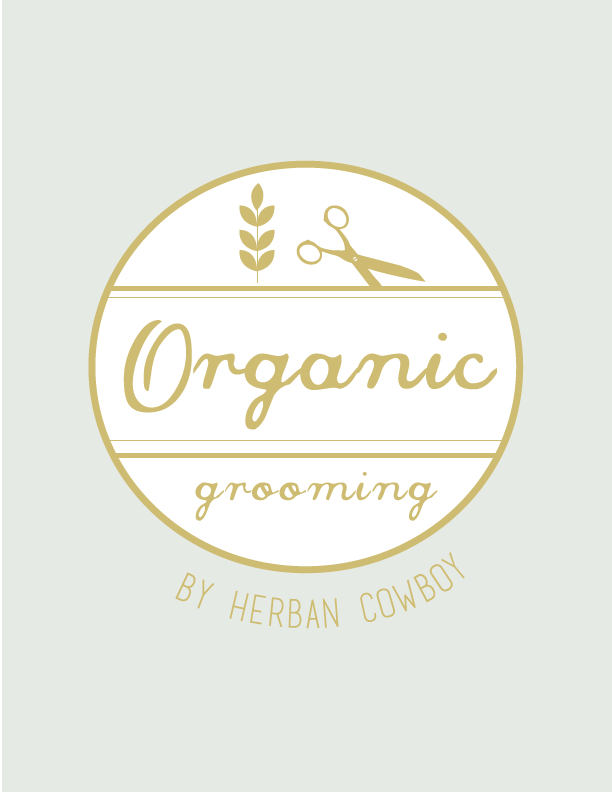
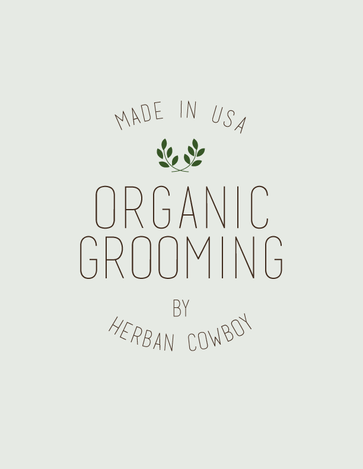
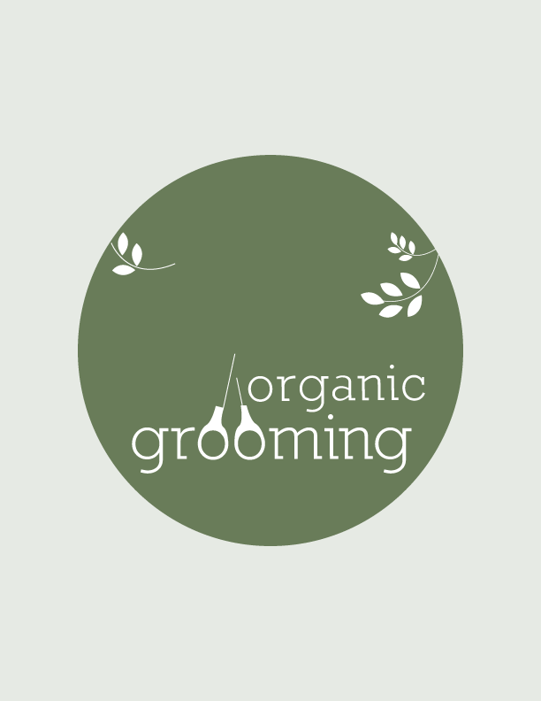

   
Organic Grooming
As the name suggests, Organic Grooming is a line of men's personal care products that strives to create skin care that is both environmentally friendly and made from natural ingredients. I had several concepts for the brand, but had finally refined the different concepts to a logo that stands strong behind the brand's principles.
BACK